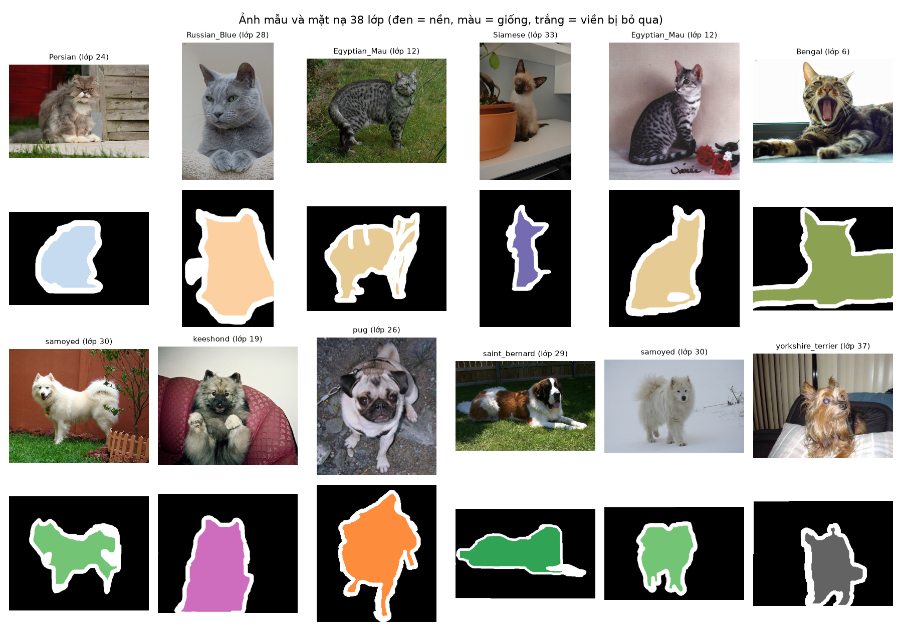
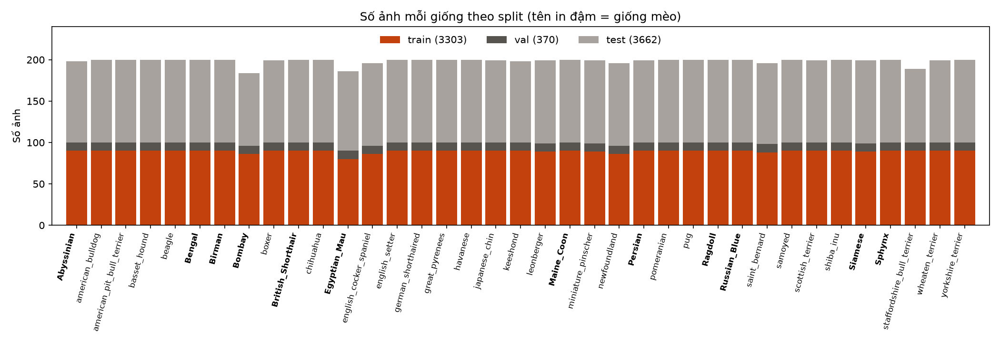
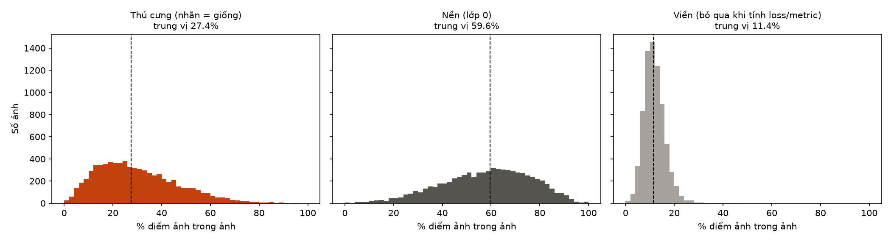
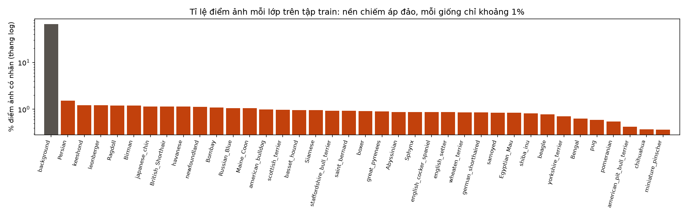
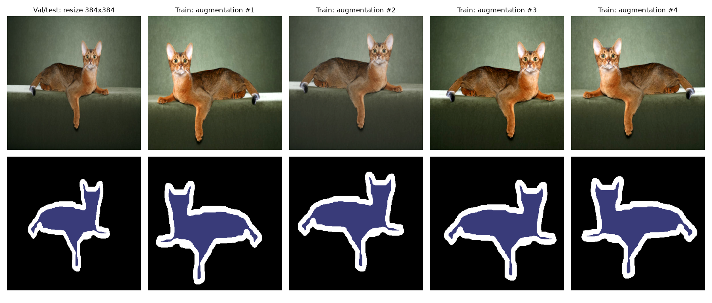

Chủ đề và paper của nhóm
| Hạng mục | Lựa chọn của nhóm |
|---|---|
| Chủ đề | Phân đoạn ngữ nghĩa 38 lớp trên ảnh chó mèo: mỗi điểm ảnh được gán là nền hoặc một trong 37 giống (12 giống mèo, 25 giống chó) |
| Paper phân tích | E. Xie, W. Wang, Z. Yu, A. Anandkumar, J. M. Alvarez, P. Luo. SegFormer: Simple and Efficient Design for Semantic Segmentation with Transformers. NeurIPS 2021. arXiv:2105.15203 · mã nguồn chính thức |
| Tập dữ liệu | Oxford-IIIT Pet (Parkhi et al., CVPR 2012): 7.349 ảnh có mặt nạ trimap |
| Hai phương pháp | U-Net + ResNet-50 (CNN) vs SegFormer-B2 (Transformer), cùng pretrained ImageNet-1k, số tham số tương đương |
| Metric | mIoU 38 lớp (chính), mean Dice, pixel accuracy, IoU thú/nền; thời gian, bộ nhớ GPU, tốc độ suy luận |
Bài toán và tập dữ liệu (EDA)
3.303 / 370 / 3.662
Ảnh train / validation / test. Validation lấy 10 ảnh mỗi giống từ trainval chính thức (seed 42); test chính thức giữ nguyên.
14 ảnh nhãn lỗi
Trimap gán toàn bộ ảnh là nền dù có con vật. Nhóm loại khỏi mọi split để không dạy và chấm sai.
27% · 60% · 11%
Trung vị tỉ lệ điểm ảnh thú / nền / viền trong một ảnh. Vùng viền bị bỏ qua khi tính loss và metric.
66% là nền
Trên tập train, mỗi giống chỉ chiếm 0,4–1,5% điểm ảnh, nên dùng mIoU thay vì pixel accuracy làm metric chính.

Ảnh mẫu và mặt nạ 38 lớp: đen là nền, mỗi màu là một giống, trắng là vùng viền bị bỏ qua.

Dữ liệu cân bằng theo giống: mỗi giống 80–90 ảnh train, 10 ảnh validation, 88–100 ảnh test.

Con vật thường chiếm phần nhỏ của ảnh; dải viền khá dày.

Nền áp đảo về số điểm ảnh; các giống tương đối đều nhau.
Dataset, DataLoader, augmentation
| Bước | Train | Validation / Test |
|---|---|---|
| Nhãn | Trimap → mặt nạ 38 lớp: nền 0, giống 1–37, viền 255 (bỏ qua) | |
| Hình học (ảnh + mặt nạ) | RandomResizedCrop 384 (scale 0,5–1) + lật ngang | Resize về 384×384 |
| Màu (chỉ ảnh) | ColorJitter 0,2 | Không |
| Chuẩn hoá | Mean/std ImageNet | |
| DataLoader | Batch 16, shuffle | Batch 16 |

Augmentation áp dụng đồng thời cho ảnh và mặt nạ (mặt nạ nội suy nearest), nên nhãn luôn khớp ảnh.
Phân tích paper: SegFormer
Phương pháp
- Encoder Mix Transformer phân cấp: 4 bản đồ đặc trưng ở 1/4 đến 1/32 độ phân giải
- Không dùng positional encoding: tích chập 3×3 trong khối FFN cung cấp thông tin vị trí
- Self-attention rút gọn chuỗi key/value để rẻ ở độ phân giải cao
- Bộ giải mã toàn MLP, rất gọn
Nhóm sẽ kiểm chứng ở A2.2
- Giải mã ở 1/4 độ phân giải có làm biên lông, tai, đuôi kém hơn U-Net?
- SegFormer-B2 có thắng một CNN mạnh cùng cỡ trên tập nhỏ hơn nhiều ADE20K/Cityscapes?
- Chi phí thực tế trên GPU T4
Bản đầy đủ (phương pháp, thí nghiệm của paper, hạn chế, đối chiếu với kết quả của nhóm) sẽ có ở mốc A2.2.
Pipeline, huấn luyện và so sánh
| Mô hình | Họ | Tham số (38 lớp) | Cách hoạt động |
|---|---|---|---|
| U-Net + ResNet-50 | CNN | 32,5 triệu | Encoder ResNet-50 (timm), bộ giải mã nhóm tự viết: phóng to 5 bước, ghép skip connection, dự đoán ở độ phân giải gốc |
| SegFormer-B2 | Transformer | 27,4 triệu | Encoder MiT-B2 + bộ giải mã toàn MLP (Hugging Face), dự đoán ở 1/4 rồi phóng bilinear |
Huấn luyện (giống nhau cho hai mô hình)
- Cross-entropy bỏ qua viền; AdamW, weight decay 0,01
- LR encoder 6e-5, bộ giải mã 6e-4; warmup 1 epoch + poly
- 40 epoch, batch 16, ảnh 384×384, mixed precision trên Colab T4
- Chọn checkpoint theo mIoU validation, test đúng một lần
8 lần huấn luyện ở A2.2
- 2 mô hình × 100% ảnh train: so sánh chính
- 2 mô hình × 50% / 25% / 10% ảnh train: mô hình nào cần ít nhãn hơn
- Phân tích lỗi: IoU từng giống, nhầm giống cùng loài so với nhầm chó ↔ mèo
- Mở rộng: thử chéo trên ảnh chó mèo của Pascal VOC, demo
Kết quả, thảo luận và hạn chế
Sẽ cập nhật ở mốc A2.2 (16/11/2026): bảng mIoU / Dice / chi phí, đường học, ảnh lỗi, đường cong theo lượng dữ liệu và thảo luận.
Hai mốc nộp
- A2.1 · 02/11/2026 Đã hoàn thànhChốt chủ đề, paper, dữ liệu và metric; EDA, DataLoader, hai mô hình, kế hoạch thí nghiệm
- A2.2 · 16/11/2026 Đang thực hiệnHuấn luyện 8 cấu hình, so sánh, phân tích paper đầy đủ, demo và video